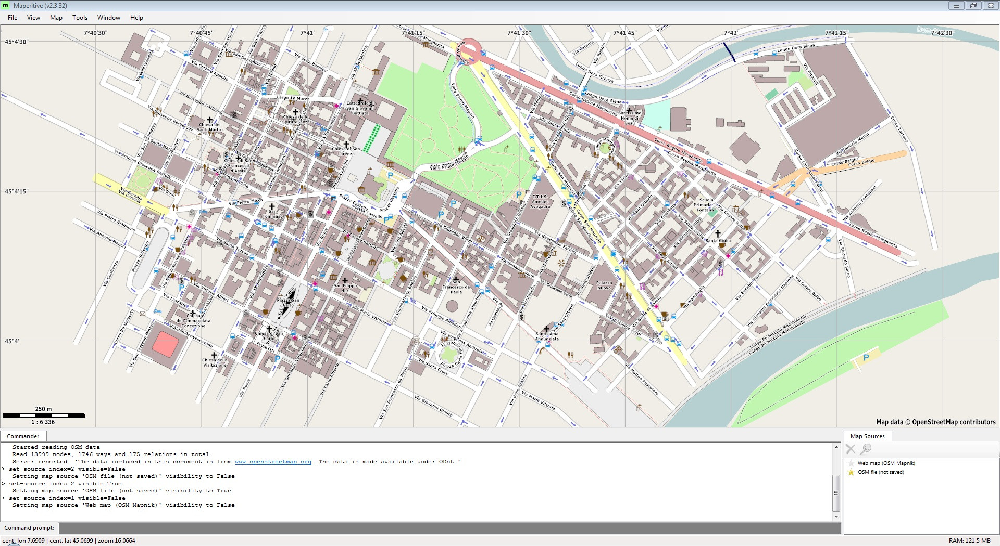
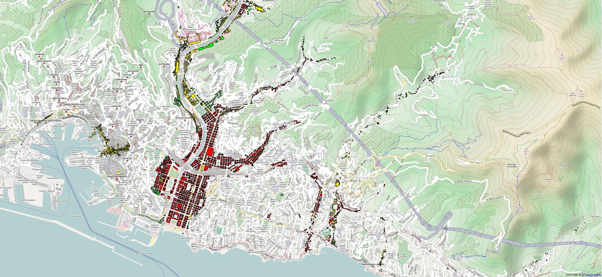

OpenStreetMap Workshop
Stefano Sabatini / Fabrizio Tambussa
OSM data model: elementi
I dati sono composti da:
- node
- way
- relation
Le way hanno altri significati:
- closed way
- area
OSM data model: tag
Ogni oggetto possiede uno o più tag che ne descrivono le proprietà.
Ad esempio un'area identifica un parcheggio se ha il tag
amenity=parking
Dove trovo i tag?
Non c'è? Chiedi ad altri o inventa!
Prelevare i dati
- Overpass turbo
- Estratti nazionali
- Estratti locali
Overpass Turbo: interfaccia
Overpass Turbo: wizard
amenity=parking in Ivrea
Overpass Turbo: risultati
Estratti
- download.geofabrik.de (daily, Mondo)
- geodati.fmach.it (daily, Italia)
- WMF OSM Toolserver (daily, Italia)
Estratti: WMF Toolserver
Usare i dati
- Database
- Tilemill
- Programmi di grafica
Database
Ovvero trasformare un estratto in un database
Ubuntu: sudo apt-get install osm2pgsql
Altro: vedi https://github.com/openstreetmap/osm2pgsql
Esempio:
osm2pgsql -W --extra-attributes -d gis -S
/usr/share/osm2pgsql/default.style Torino---43992.pbf
Dai dati alle immagini
- Raster
- Vettoriale
Tilemill

- Frontend di Mapnik
- Stili scritti simili a CSS (CartoCSS)
- Input: CSV, GeoJSON, shapefile, postgresql, spatialite, KML, GeoTIFF
- Output: PNG, PDF, SVG, MBTiles
Tilemill
Dati vettoriali
SVG ottenibile da
- osm.org
- Qgis
- Tilemill
- Maperitive
Altri tool:
Tilemill: vettoriale
Maperitive
- Rendering su Windows (non opensource)
- Stili nel proprio linguaggio
- Dati direttamente da OSM e hillshading
- Output: raster o vettoriale
Mappe dinamiche
- uMap
- LeafletJS
uMap
- http://umap.openstreetmap.fr/it/
- Creazione 'visuale' di mappe
- Import dati strutturati
- Embed in altri siti
uMap
Leaflet
- LeafletJS, libreria javascript
- Moltitudine di plugin
- API semplice
Esempi di Mashup
Dati GPS
- https://github.com/pviotti/osm-viz
- Sfondo: Nasa City Lights
- Dataset: Dati GPS di OpenStreetMap (Planet.gpx)
Dataset regionali
- www.opengenova.org/emergenza2014
- Sfondo: OSM Cyclemap
- Dataset: Classi di rischio + Edificato (Regione Liguria)